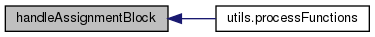

Functions | |
| def | handleAssignmentBlock (node, internalVariables) |
| def | handleDeclBlock (node, internalVariables) |
| def | handleFuncCallBlock (node, functions, fName, functionCalls, internalVariables) |
| def | handleReturnBlock (node, internalVariables, functions, fName) |
| def | reconstruct_expression (node, internalVariables) |
Function Documentation
◆ handleAssignmentBlock()
| def blockHandlers.handleAssignmentBlock | ( | node, | |
| internalVariables | |||
| ) |
@brief Handles assignment blocks in the AST and updates internal variables. This function processes assignment nodes to determine the type of the variable (either "reg" or "wire") and reconstructs its assigned value. @param node: The assignment node being processed. @type node: pycparser.c_ast.Assignment @param internalVariables: A dictionary to store and manage internal variables. @type internalVariables: dict @return: Boolean indicating if a register variable is present. @rtype: bool
Definition at line 70 of file blockHandlers.py.
74 This function processes assignment nodes to determine the type of the variable (either "reg" or "wire") and reconstructs its assigned value.
def handleAssignmentBlock(node, internalVariables)
Definition: blockHandlers.py:70
def reconstruct_expression(node, internalVariables)
Definition: blockHandlers.py:4
Here is the call graph for this function:
Here is the caller graph for this function:

◆ handleDeclBlock()
| def blockHandlers.handleDeclBlock | ( | node, | |
| internalVariables | |||
| ) |
@brief Handles declaration blocks in the AST and updates internal variables. This function processes declaration nodes to determine the type of the variable (either "reg" or "wire") and reconstructs its initial value. @param node: The declaration node being processed. @type node: pycparser.c_ast.Decl @param internalVariables: A dictionary to store and manage internal variables. @type internalVariables: dict @return: Boolean indicating if a register variable is present. @rtype: bool
Definition at line 41 of file blockHandlers.py.
45 This function processes declaration nodes to determine the type of the variable (either "reg" or "wire") and reconstructs its initial value.
def reconstruct_expression(node, internalVariables)
Definition: blockHandlers.py:4
def handleDeclBlock(node, internalVariables)
Definition: blockHandlers.py:41
Here is the call graph for this function:
Here is the caller graph for this function:
◆ handleFuncCallBlock()
| def blockHandlers.handleFuncCallBlock | ( | node, | |
| functions, | |||
| fName, | |||
| functionCalls, | |||
| internalVariables | |||
| ) |
@brief Handles function call blocks in the AST and updates the function calls list. This function processes function call nodes to record the function instance, parameter list, and update the function call information. @param node: The function call node being processed. @type node: pycparser.c_ast.FuncCall @param functions: A dictionary containing function information. @type functions: dict @param fName: The name of the function making the call. @type fName: str @param functionCalls: A dictionary to store function calls information. @type functionCalls: dict @param internalVariables: A dictionary to store and manage internal variables. @type internalVariables: dict
Definition at line 126 of file blockHandlers.py.
130 This function processes function call nodes to record the function instance, parameter list, and update the function call information.
def handleFuncCallBlock(node, functions, fName, functionCalls, internalVariables)
Definition: blockHandlers.py:126
def reconstruct_expression(node, internalVariables)
Definition: blockHandlers.py:4
Here is the call graph for this function:
Here is the caller graph for this function:

◆ handleReturnBlock()
| def blockHandlers.handleReturnBlock | ( | node, | |
| internalVariables, | |||
| functions, | |||
| fName | |||
| ) |
@brief Handles return blocks in the AST and updates function outputs. This function processes return nodes to identify output variables and updates the function's output list or internal variables accordingly. @param node: The return node being processed. @type node: pycparser.c_ast.Return @param internalVariables: A dictionary to store and manage internal variables. @type internalVariables: dict @param functions: A dictionary containing function information. @type functions: dict @param fName: The name of the function being processed. @type fName: str
Definition at line 103 of file blockHandlers.py.
107 This function processes return nodes to identify output variables and updates the function's output list or internal variables accordingly.
def reconstruct_expression(node, internalVariables)
Definition: blockHandlers.py:4
def handleReturnBlock(node, internalVariables, functions, fName)
Definition: blockHandlers.py:103
Here is the call graph for this function:
Here is the caller graph for this function:
◆ reconstruct_expression()
| def blockHandlers.reconstruct_expression | ( | node, | |
| internalVariables | |||
| ) |
@brief Recursively reconstructs expressions from AST nodes. This function converts AST nodes into a string representation of the expression they represent. It supports binary operations, unary operations, constants, identifiers, and function calls. @param node: The AST node representing an expression. @type node: pycparser.c_ast.Node @param internalVariables: A dictionary to store and manage internal variables. @type internalVariables: dict @return: A string representing the reconstructed expression. @rtype: str @raises ValueError: If the node type is unsupported.
Definition at line 4 of file blockHandlers.py.
8 This function converts AST nodes into a string representation of the expression they represent. It supports binary operations, unary operations, constants, identifiers, and function calls.
def reconstruct_expression(node, internalVariables)
Definition: blockHandlers.py:4
Here is the caller graph for this function: